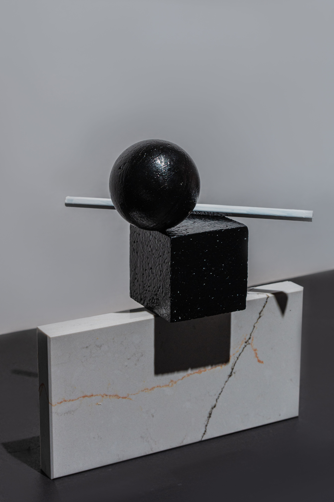

Solutions
Engineering
Consulting
Integrated
2027 : par où commencer ?
Avant la pause de fin d'année, une question simple : quels sont vos trois chantiers prioritaires pour 2027 ?
Bonjour [Prénom],
C'est le dernier message de l'année, et nous voulions le consacrer à une question plutôt qu'à une offre.
Il y a deux manières d'aborder une nouvelle année. On peut la subir : réagir aux urgences, courir après les échéances, improviser.
Ou on peut la préparer, en consacrant un peu de temps à ce qui comptera dans vingt ans. Chez ICES, nous avons choisi la seconde, et c'est elle qui guide notre feuille de route à l'horizon 2045.
Voici, en cinq grands thèmes, ce sur quoi nous travaillons pour les États, les bailleurs et les entreprises :
Anticiper. Prospective et simulation de scénarios assistées par l'IA, intelligence stratégique sur les ressources critiques (bauxite, fer, or, lithium, terres rares), jumeaux numériques de territoires et d'infrastructures.
Valoriser les ressources. Fonds souverains pour mettre la rente minière au service des générations futures, transformation locale, nouvelles formes de financement (financements mixtes, obligations vertes et bleues).
Assurer l'énergie et l'eau. Souveraineté énergétique, hydrogène vert, électrification industrielle, gestion intégrée des bassins versants.
Investir dans les personnes.
Dividende démographique, emploi des jeunes, académies de compétences critiques.
Protéger.
Cybersécurité et souveraineté des données,
observation satellitaire pour la surveillance minière, agricole, forestière et foncière.
Ce n'est pas une promesse lointaine : cette feuille de route façonne dès maintenant la manière dont nous concevons chaque mission, pour que les contrats, les mandats, les concessions et les politiques que nous accompagnons restent solides sur la durée.
Alors, avant de refermer 2026, une question :
quels sont vos trois chantiers prioritaires pour 2027 ?
Prenez cinq minutes pour nous les décrire. Nous vous répondrons avec une proposition de cadrage, sans engagement. Vous pouvez aussi simplement répondre à cet email.
Toute l'équipe d'ICES vous souhaite de belles fêtes de fin d'année, et le meilleur pour 2027.